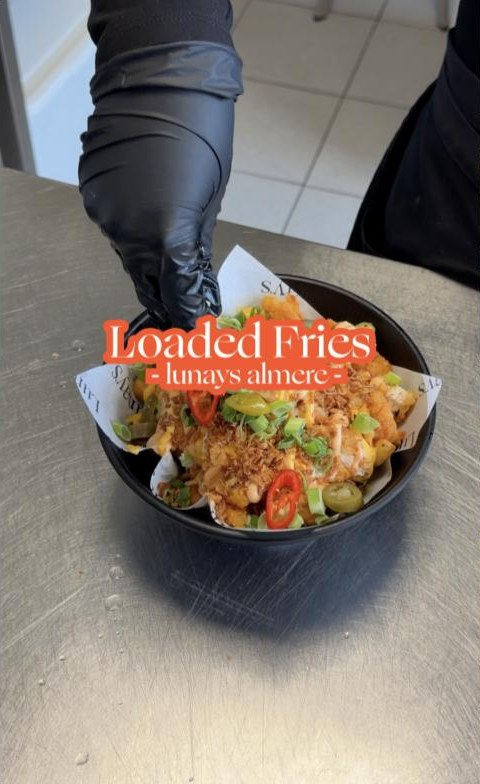
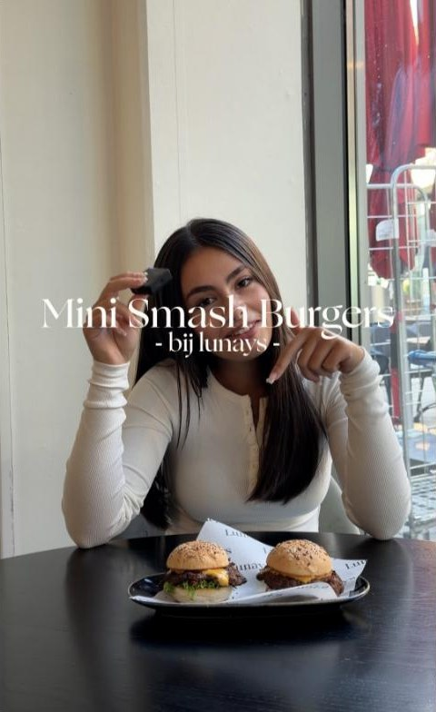
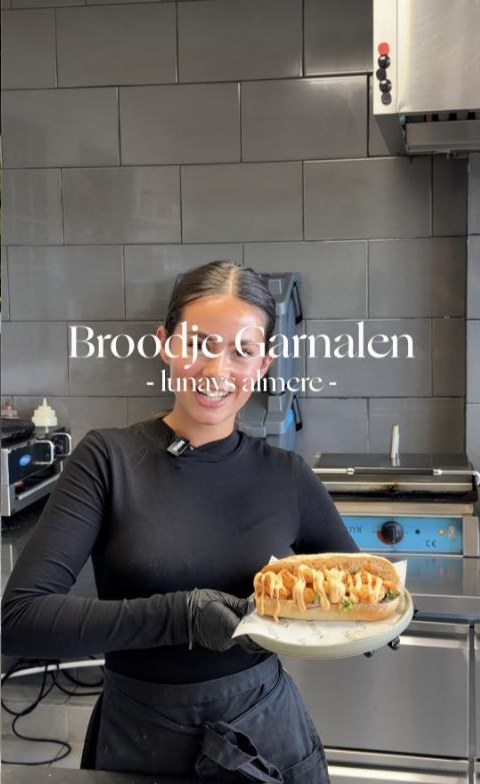
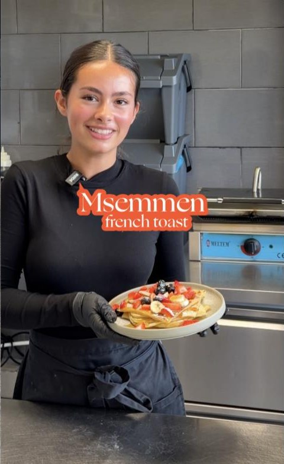
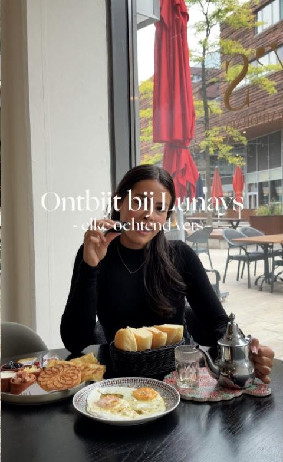
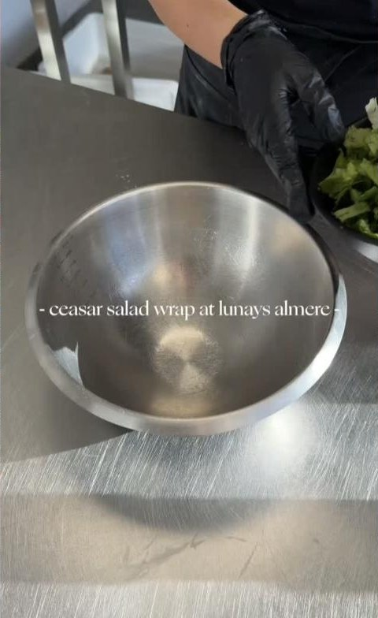
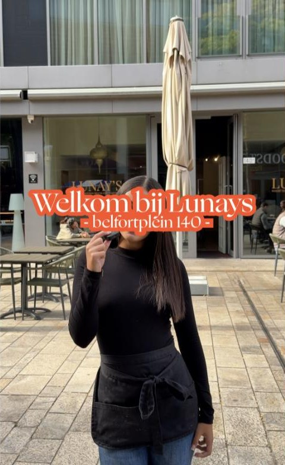
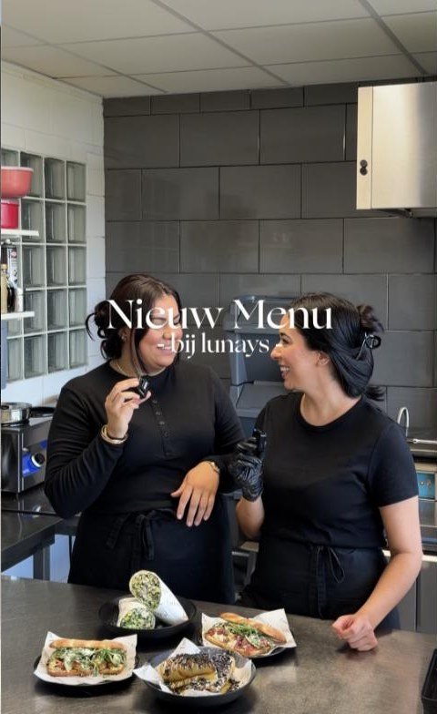

Loaded fries kip
Friet met kip en toppings, 'gevaarlijk lekker'.
€ 12,50Ontbijt met msemmen en thee, tajines, broodjes en loaded fries – op het Belfortplein in Almere Centrum. Kom langs of bekijk eerst de menukaart.



Een kleine selectie uit de menukaart – met de prijzen van de openbaar gepubliceerde kaart.
Friet met kip en toppings, 'gevaarlijk lekker'.
€ 12,50
Mini burgers met krokante kip, kaas, salade en saus.
€ 12,90
Gevuld met garnalen en salade.
€ 12,00
Marokkaanse pannenkoek, twee stuks.
€ 5,50
Traditioneel Marokkaans ontbijt met verse Marokkaanse pannenkoeken en thee – elke ochtend vers, schrijft Lunay's zelf.
Recente gerechten die Lunay's op Instagram laat zien.

Sinds de introductie bij veel gasten een nieuwe favoriet.

Broodje carpaccio met burrata.
Msemmen met lotus – nieuw bij Lunay's.
Lekker voor laat in de middag of tijdens de lunch.
Elke tegel hieronder opent de bijbehorende reel op Instagram. Zo laat je gasten zien wat er vers op tafel staat.

Caesar salad wrapReel · nieuw op het menuBroodje garnalenReel · favorietTajineReel · lunch of laterCarpaccio deluxeReel · met burrataMsemmenReel · french toast-stijlLoaded fries kipReel · loaded fries
Welkom bij Lunay'sReel · BelfortpleinOntbijt bij Lunay'sReel · elke ochtend versCaesar salad wrapReel · nieuwLotus msemmenReel · nieuw
Nieuw menuReel · nieuwe gerechtenBelfortplein, Almere Centrum · open in Google Maps
Zoals vermeld in de Instagram-bio; controleer Instagram voor actuele tijden.
Via Instagram @lunaysalmere